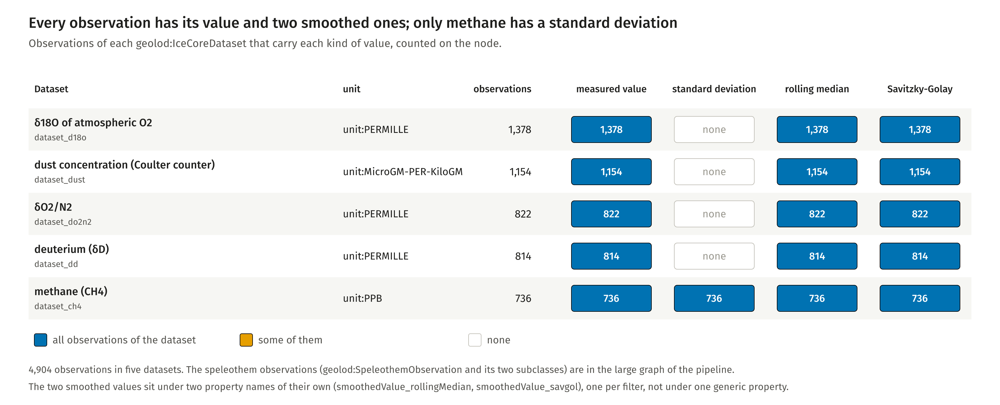

PREFIX geolod: <http://w3id.org/geo-lod/>
PREFIX strat: <http://w3id.org/geo-lod/strat/>
PREFIX sisal: <http://w3id.org/geo-lod/sisal/>
PREFIX sosa: <http://www.w3.org/ns/sosa/>
PREFIX rdfs: <http://www.w3.org/2000/01/rdf-schema#>
PREFIX dct: <http://purl.org/dc/terms/>
# Per class of the cluster: nodes typed with the class itself, and nodes typed with it or a subclass.
# Runs on the committed graphs (EPICA, SISAL cave catalogue) together with the three ontology files.
SELECT ?class (SUM(IF(?t = ?class, 1, 0)) AS ?asserted) (COUNT(DISTINCT ?x) AS ?with_subclasses) WHERE {
VALUES ?class { geolod:Delta13CProperty
geolod:Delta13CSpeleothemObservation
geolod:Delta18OProperty
geolod:Delta18OSpeleothemObservation
geolod:DepthPosition
geolod:IceCoreObservation
geolod:MeasurementType
geolod:ObservableProperty
geolod:PalaeoclimateObservation
geolod:RollingMedianFilter
geolod:SavitzkyGolayFilter
geolod:SmoothingMethod
geolod:SpeleothemObservation }
?x a ?t .
?t rdfs:subClassOf* ?class .
} GROUP BY ?class
Run on epica_dome_c.ttl with the ontology files and compared with a count in Python: 7 of 13 classes have asserted nodes.

Which kinds of value each dataset carries
Fiona Schenk, Florian Thiery, Research Squirrel Engineers at LEIZA. CC BY 4.0.
PREFIX geolod: <http://w3id.org/geo-lod/>
PREFIX strat: <http://w3id.org/geo-lod/strat/>
PREFIX sisal: <http://w3id.org/geo-lod/sisal/>
PREFIX sosa: <http://www.w3.org/ns/sosa/>
PREFIX rdfs: <http://www.w3.org/2000/01/rdf-schema#>
PREFIX dct: <http://purl.org/dc/terms/>
PREFIX qudt: <http://qudt.org/schema/qudt/>
PREFIX epica: <http://w3id.org/geo-lod/epica/>
# The methane record: age, measured value and the two smoothed values, one row per observation.
SELECT ?age_ka ?measured ?rolling_median ?savitzky_golay WHERE {
?obs sosa:observedProperty epica:property_ch4 ;
geolod:ageKaBP ?age_ka ;
geolod:measuredValue ?measured ;
geolod:smoothedValue_rollingMedian ?rolling_median ;
geolod:smoothedValue_savgol ?savitzky_golay .
} ORDER BY ?age_ka
Run on epica_dome_c.ttl and compared with the figure: 736 rows, 0 to 649 ka BP.
Classes
Class
Label
Comment
CRM anchor
geolod:Delta13CProperty
δ¹³C Property
crmsci:S9_Property_Type
geolod:Delta13CSpeleothemObservation
δ¹³C Speleothem Observation
crmsci:S4_Observation
geolod:Delta18OProperty
δ¹⁸O Property
Stable oxygen isotope ratio (δ¹⁸O), shared by both ice-core and speleothem records.
crmsci:S9_Property_Type
geolod:Delta18OSpeleothemObservation
δ¹⁸O Speleothem Observation
crmsci:S4_Observation
geolod:DepthPosition
Depth Position
A position along the depth axis of an archive, in metres. Used where a value published as an age has been carried into depth through a depth-age model.
crm:E54_Dimension
geolod:IceCoreObservation
Ice Core Observation
A single measured value at a known depth in an ice core. The depth is what was measured; the age is derived from it through a chronology, which the observation names.
crmsci:S4_Observation
geolod:MeasurementType
Measurement Type
Classifies an observation by the physical quantity measured.
crmsci:S6_Data_Evaluation
geolod:ObservableProperty
Observable Property
A measurable geochemical or physical property of a palaeoclimate sample (e.g. δ¹⁸O, δ¹³C, CH₄ concentration).
crmsci:S9_Property_Type
geolod:PalaeoclimateObservation
Palaeoclimate Observation
A single measured value (e.g. δ¹⁸O, δ¹³C, CH₄) at a known depth or age within a palaeoclimate archive.
crmsci:S4_Observation
geolod:RollingMedianFilter
Rolling Median Filter
Non-parametric smoother computing the median within a sliding window of fixed width.
crmsci:S6_Data_Evaluation
geolod:SavitzkyGolayFilter
Savitzky-Golay Filter
Polynomial least-squares smoothing filter preserving higher signal moments.
crmsci:S6_Data_Evaluation
geolod:SmoothingMethod
Smoothing Method
A numerical method applied to reduce high-frequency noise in a palaeoclimate time series.